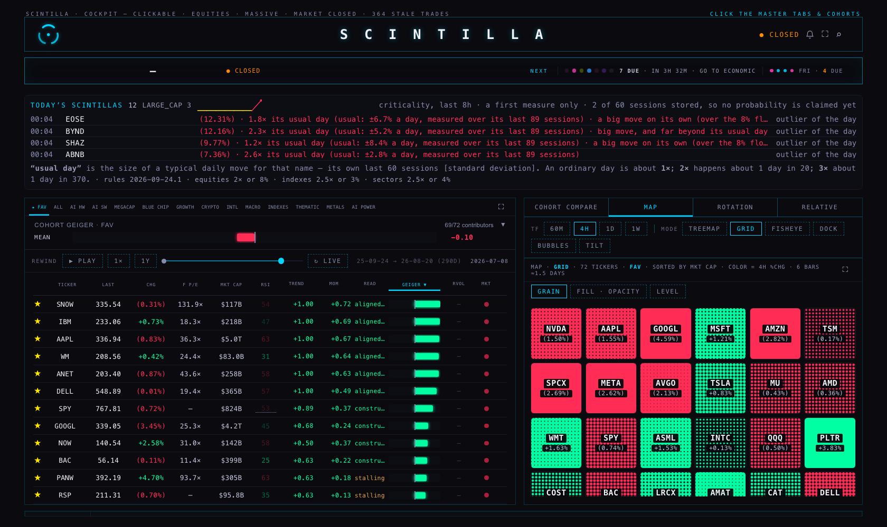
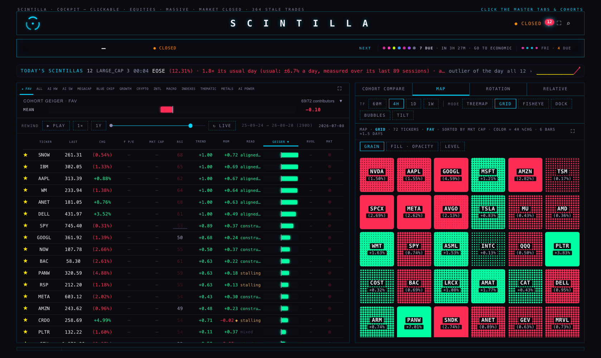
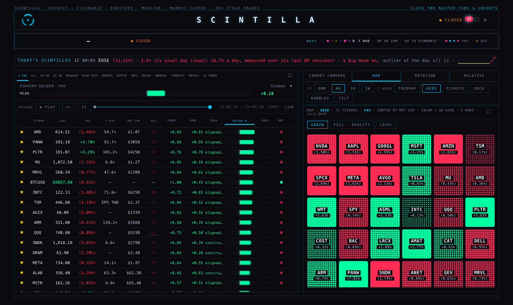
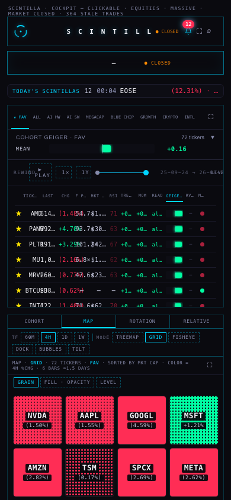
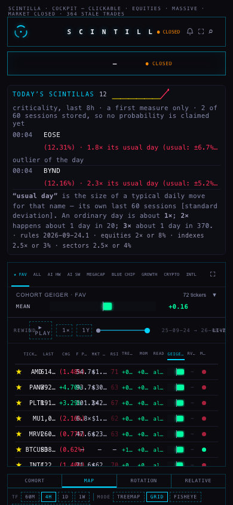
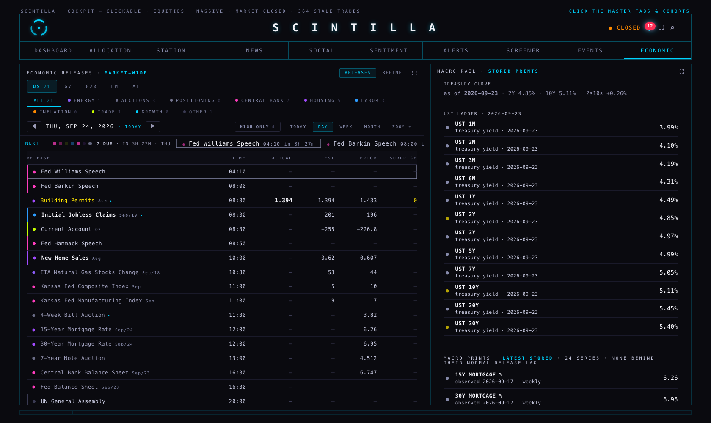
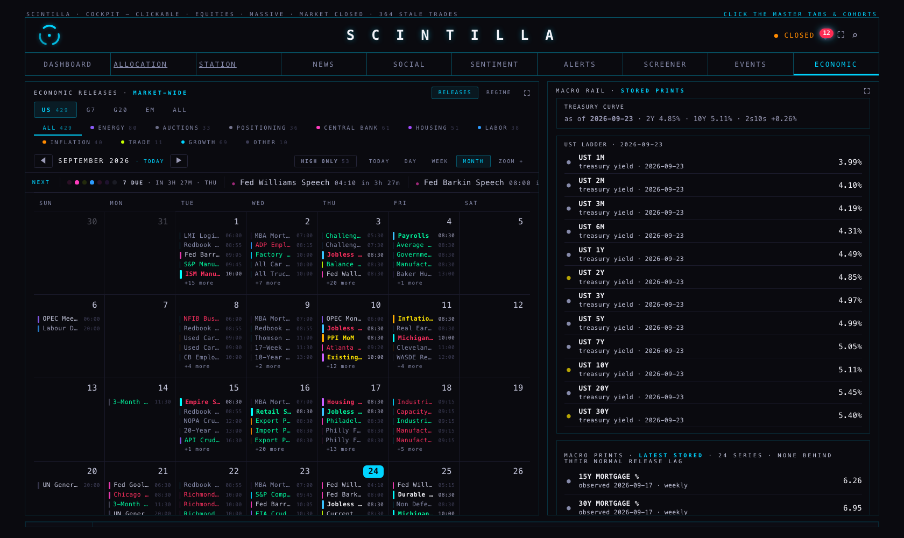

Three things, in your words. “See the whole table moving. All of the rows and columns moving.” “We need things to scintillate in their own place where I navigate around … what about a notifications channel?” And: “This thing is telling me go to economic … and then I go there, Fed Williams speech, I don’t get it. I don’t see the flashing.” All three are built, and every number below was read off the running page, not assumed.
Before today the rewind moved the Geiger bar, the trend and the momentum. Every other column kept showing today while the date under the bar said July. Now each column plays its own history, and the rows still rank by the Geiger bar — that part has not changed.
Both pictures are the rewind parked on 8 July 2026, on the FAV board, captured minutes apart from the shipped page and from this branch.


| Column | On a replayed day | Where it comes from |
|---|---|---|
| Last | that day’s close | the daily bars the chart API serves (/candles tf=1d) — the same provider the hub prices from |
| Chg | that day’s own move | the same bars: that close against the previous stored bar, never against today |
| RSI | that day’s RSI | momentum_daily.rsi — the row the rewind was already reading for momentum |
| Trend · Mom · Read | that day’s | fan_daily.read and momentum_daily.read (unchanged) |
| Geiger | that day’s | the same composite the replay has always played (unchanged) |
| F P/E | — | the forward multiple is today’s consensus estimate; no dated history exists |
| Mkt Cap | — | a current profile field; no dated history |
| RVol | — | a session ratio is only true for its own session, and none is stored per date |
| Mkt | dimmed | the market-state dot is a live reading, not history |
Every dash carries the reason on hover. The rule is the one that already cost us once: a column with no history for that date shows nothing, never today’s value.
I asked the chart API for the same three names and worked the arithmetic out by hand:
| Ticker | 8 Jul close | Previous bar | Day’s move | On screen |
|---|---|---|---|---|
| AAPL | 313.39 | 310.66 | +0.88% | 313.39 · +0.88% |
| SNOW | 261.31 | 262.74 | −0.54% | 261.31 · (0.54%) |
| IBM | 302.05 | 306.13 | −1.33% | 302.05 · (1.33%) |
scRewoundNow(), before touching a cell. Without the check against the provider
the board would have looked right and been wrong by about two percentage points a row.M47’s promise was two geometry reads a tick however many rows are on the board. That is intact: the column work reads no geometry at all, and deciding which rows are on screen reuses the two numbers the tick has already read.
| Measured, 1680 × 1000, FAV board | Shipped (ddc37d8) | This branch |
|---|---|---|
| one replay tick | 5.9 ms | 7.0 – 8.4 ms |
| rows on the board / moved | 72 / 72 | 72 / 72 |
| rows actually animated | 19 | 23 |
| geometry reads per tick | 3 | 3 |
| geometry reads in the column pass | — | 0 |
The three reads are the two the module has always taken — where the board is, how far it is scrolled — plus the single flush that makes the row movement animate rather than jump. At 364 rows that is the same three.
The price history costs one request per ticker for the whole rewind window, at most four in flight, and only for the rows on screen plus a margin: 29 KB and about 0.8 s for 260 daily bars, measured. A row whose bars have not landed shows the page’s own pending mark, then a dash if the provider has no history for it.
You said the strip was becoming another tape. It is now one line: how many today, and the newest one said in plain words. The list moved into the bell you already have in the header — one line each, tapping through to the place the thing lives.



| Scintilla | Glows on | Tapping the notification |
|---|---|---|
| price outlier | the board row’s percentage cell · the company’s own ident bar | opens that company |
| earnings surprise | the earnings chip and the timeline row · the company ident | opens that company |
| economic surprise / about to print | the Economic room’s row, or its month chip | opens the Economic room on that day, with the release named |
The glow is the one primitive the hub already uses — 520 ms, colour and text-shadow only, so it can never move the layout — and it happens once per surface per event.
scintillas table holds 17 rows,
all from one day (24 September) — it is the only day the detector has run — and the Hub’s own
strip counted 12 for today at the moment of capture. M48’s rules were sized for about 7 a day.
So expect roughly 10–20 a day, all price outliers until the earnings and economic detectors
have run through a cycle. The bell keeps 50 notifications, so a heavy day of scintillas plus
favourite-ticker news will push older news out within two or three days. Decision below.The tape was flashing and the room was not. Not because the room was broken — because the flashing only ever existed in the header. The room now carries the tape’s own queue, painted by the same function, flashed by the same one, above the table, in DAY, WEEK and MONTH.

I did not invent a cadence. The room runs the header’s model through the header’s plan and the header’s glow. Read off the running page, the room’s chip animates:
| What | Header tape | Economic room |
|---|---|---|
| the loaded-day chip’s dots | mn-hard · 1.1s / 0.9s / 1.3s | mn-hard · 1.1s / 0.9s / 1.3s |
| dot colours | the calendar’s category hues | the same hues, same order |
| more than 15 min out | no glow — silence is information | the same |
| last 15 min / last 5 / the minute | 20 s · 6 s · 2 s | 20 s · 6 s · 2 s |
Your words were “colors flashing like crazy, six”. That chip is the header collapsing a loaded day into one item, which is right when you have one line. The room has the width, so it keeps the chip and then lists the releases behind it — eleven of them at capture, each with its own category dot, its own countdown and its own way through. That is the part that was missing when you got there and could not tell what the flashing was about.

fan_daily for SPY, and SPY’s newest row there is 2026-08-20. Across the whole
universe that table holds 362–382 names a day up to 20 August and then only 22 a day. Prices,
changes and RSI would replay any date you can reach — the trend leg is what stops the clock. That is
a data-pipeline question, not a Hub one, and I have not touched the writer.momentum_daily carries 386 names a day
through 23 September, but AAPL’s read and RSI are identical on the 21st, 22nd and 23rd
(0.0205 and 48.93). Either the writer is carrying values forward or it has stopped updating. Worth
checking before anyone trusts a recent replayed RSI.hub/motion-20260924 on
ddc37d8.ratios_history
exists per fiscal period, but printing it under a header that says forward would be a
different lie from the one this work removes.